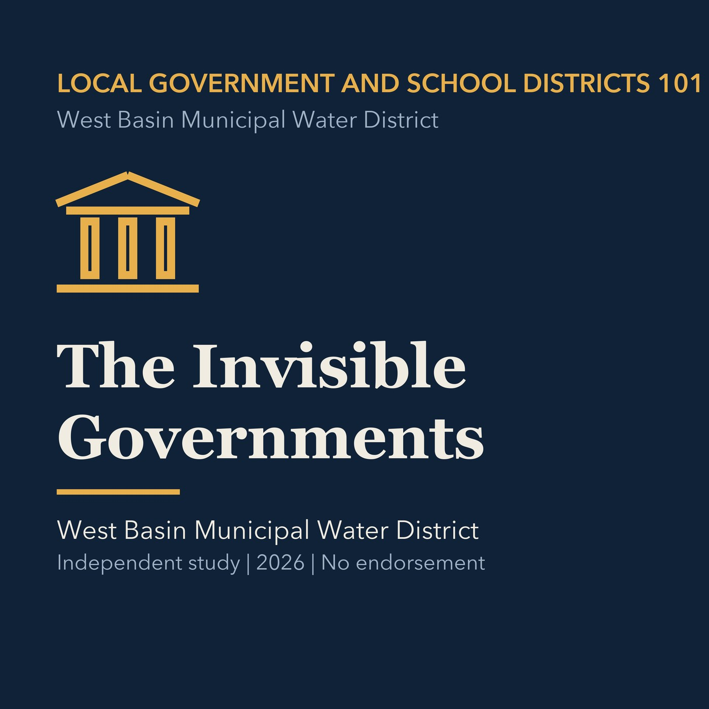

EPISODE 04
The Invisible Governments
Introduces special districts and the public services they provide outside ordinary city departments.

- Stable GUID
086a10fc-ca00-5ce3-bc9f-240a98dd6f2c- Release
- local-government-101-v2026.3
- SHA-256
591ef2e119f5e7b48e2480af69a43ebeab4b9162def6ee5b078a89d6e6fc2a68